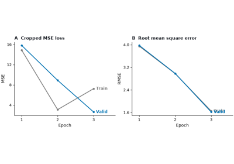
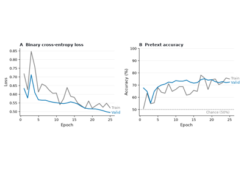
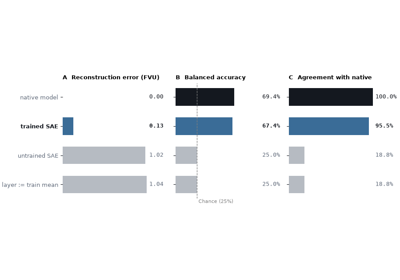
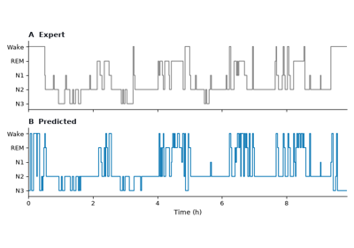
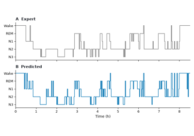
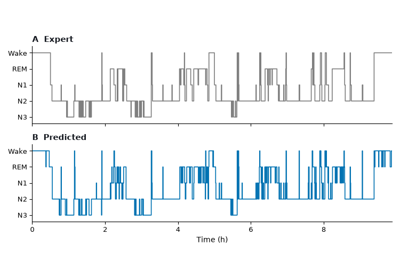

braindecode.util.set_random_seeds#
- braindecode.util.set_random_seeds(seed, cuda, cudnn_benchmark=None)[source]#
Set seeds for python random module numpy.random and torch.
For more details about reproducibility in pytorch see https://pytorch.org/docs/stable/notes/randomness.html
- Parameters:
seed (int) – Random seed.
cuda (bool) – Whether to set cuda seed with torch.
cudnn_benchmark (bool (default=None)) – Whether pytorch will use cudnn benchmark. When set to None it will not modify torch.backends.cudnn.benchmark (displays warning in the case of possible lack of reproducibility). When set to True, results may not be reproducible (no warning displayed). When set to False it may slow down computations.
Notes
In some cases setting environment variable PYTHONHASHSEED may be needed before running a script to ensure full reproducibility. See https://forums.fast.ai/t/solved-reproducibility-where-is-the-randomness-coming-in/31628/14
Using this function may not ensure full reproducibility of the results as we do not set torch.use_deterministic_algorithms(True).
Examples using braindecode.util.set_random_seeds#

Cleaning EEG Data with EEGPrep for Trialwise Decoding



Convolutional neural network regression model on fake data.


Fingers flexion cropped decoding on BCIC IV 4 ECoG Dataset

Searching the best data augmentation on BCIC IV 2a Dataset

Self-supervised learning on EEG with relative positioning

Sparse autoencoders on the activations of a motor-imagery decoder


Fingers flexion decoding on BCIC IV 4 ECoG Dataset

From window labels to events: asynchronous EEG decoding with DANCE


Sleep staging on the Sleep Physionet dataset using Chambon2018 network

Sleep staging on the Sleep Physionet dataset using Eldele2021

Sleep staging on the Sleep Physionet dataset using U-Sleep network